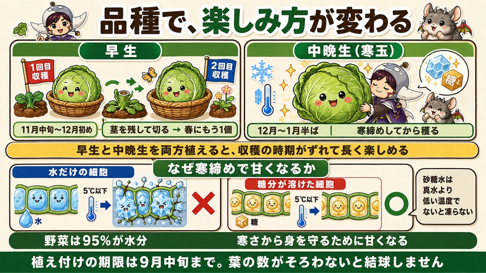
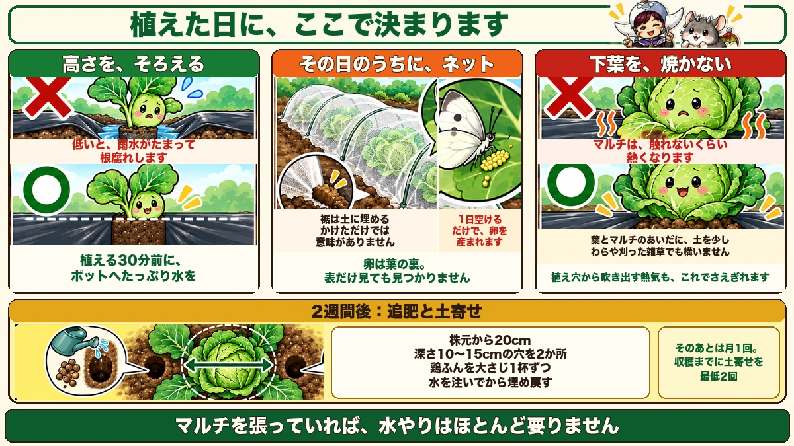
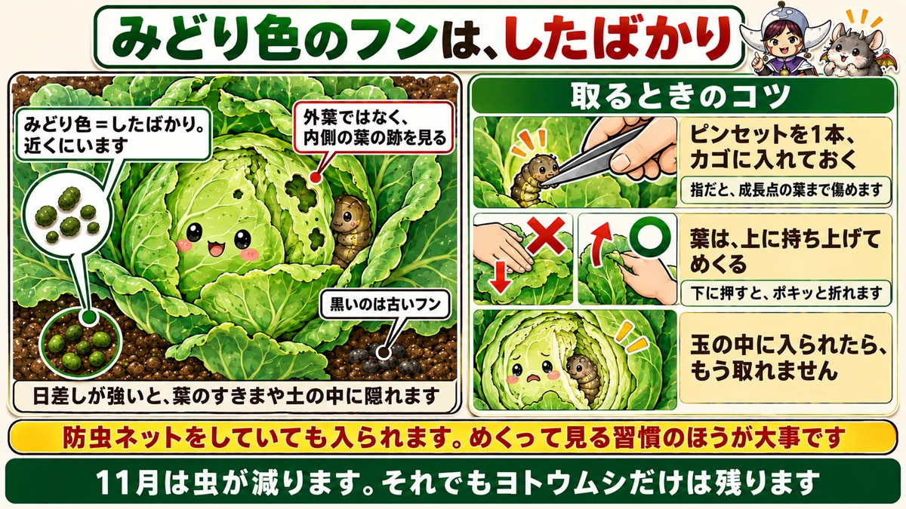
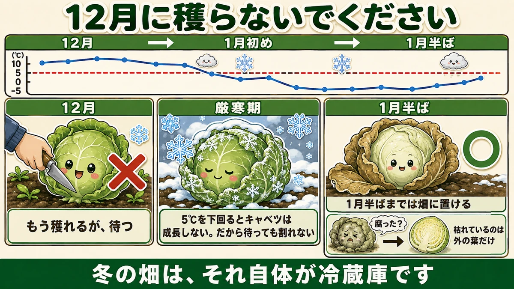
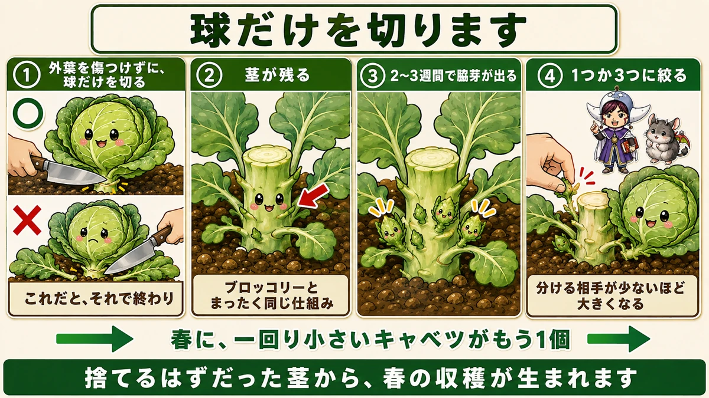
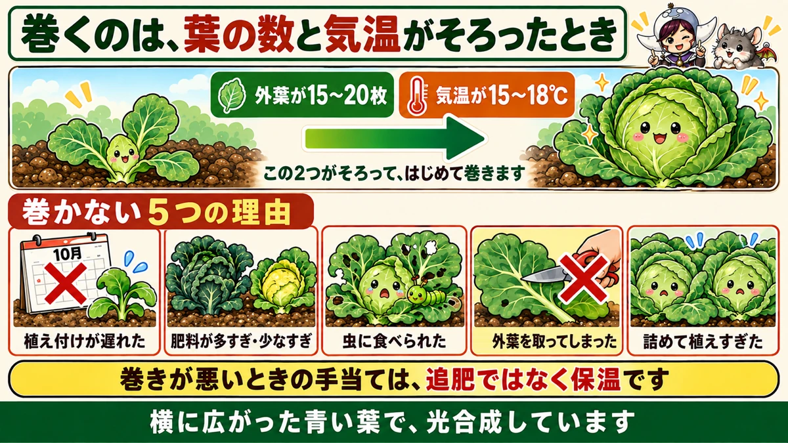

キャベツ栽培の調べもの帖｜植え時・巻かない原因・冬越しと収穫の判断
🥬「1株から1個。それで終わりだと思っていた」
🥬「12月に穫ったほうがいいのか、待つべきか」
🥬「外葉が枯れてきた。腐るのでは？」
どうも、8150（えいこう）です🌱 家庭菜園歴8年、理科の教員免許を持っていて、有機・無農薬で野菜を育てています。
前回、秋の虫の話でキャベツが出てきました。今日はそのキャベツ本体の話です。
先に、この記事でいちばん言いたいことを言っておきます。
キャベツは、切り方を変えるだけで、春にもう1個穫れます。
1株から2回。特別な道具も肥料も要りません☺️
📖 この記事の目次
この記事で分かること
- 秋冬どりのキャベツは、冷え込む前に外側の葉を増やしておくと、玉を作る準備が整います。
- 苗は葉数だけで選ばず、葉裏、中心の芽、根の状態を見て、購入後は植え時を逃さないようにします。
- 巻かない株は『植えた日』『葉の量と色』『虫』『根』『気温』を調べてから手当てを選びます。
- 青い外葉は残します。虫を探すときも、葉を折らずに持ち上げて確認してください。
- 冬どりと春どりでは、寒さへの対応も収穫の見方も変わります。作型を混ぜて考えないことが大切です。
- 収穫後の切り株で小さな玉を育てる方法もあります。ただし、収穫時期と残す葉の条件がそろう場合の楽しみ方です。
キャベツが葉っぱばかりで、真ん中が丸くならない。こういうとき、肥料を足したくなるんですよね。でも、最初に見るのは肥料袋より株です。葉を作る段階なのか、玉が育つ段階なのかで、必要な作業が違います。
このページでは、種から始めるみなさんには時期順の手順を、すでに困っているみなさんには症状からの見分け方を用意しました。キャベツは『外葉を育てる期間』と『その働きで玉を育てる期間』をつなげて考えると、作業の理由が分かりやすくなります。
数字は便利ですが、春どりの小さな苗に、秋冬どりの大苗の説明をそのまま当てはめると迷います。まず『いつ食べたいキャベツか』を決めましょう。全部を暗記する必要はありません。いま育てているタイプのところから読めば大丈夫です☺️
早見：キャベツの育て方（ひと目で分かる数字）
栽培計画に使う数字
- 夏まき秋冬どり：7月に種をまき、9月上旬〜中旬に苗を植え、11〜12月に収穫する流れが目安です。早生と中生・晩生では収穫期が違います。
- 春まき初夏どり：2〜3月の種まき、3〜4月の植え付け、5月下旬〜6月の収穫という流れです。低温期の種まきには、発芽に必要な温度を確保する準備が要ります。
- 秋まき春どり：9〜11月に種をまき、翌年3〜5月の収穫を目指します。10月末に植えて3月収穫、11月に植えて4月収穫という説明もあります。
- 地域差：上の日程は栽培例の暦です。寒い地域ほど暖かい期間が短くなるので、種袋の地域別の適期と品種の説明を優先してください。暖地の遅植えの話を、寒冷地へ移して考えないようにします。
- 発芽に向く温度：20〜25℃。冬の室外に置くだけで、この温度になるとは限りません。
- 育苗期間：春まきで温度を確保した条件では、約3週間の説明があります。夏まきや冬越し苗の予定を、同じ日数で決める数字ではありません。
- 植える苗の葉数：育苗容器や作型によって、本葉2〜3枚、3〜4枚、5〜6枚、6〜7枚などの説明があります。春どりで冬を越す苗には、7〜8枚という説明もあります。
- 株間：およそ30〜45cm。30cm、40cm、45cmという異なる栽培例があるので、育てる玉の大きさ、植える季節、外葉の広がる場所を合わせて選びます。
- うね幅：60cmの例があります。支柱と防虫ネットを収めやすい幅としての説明なので、何列植えても60cmでよいという意味ではありません。
- 土の酸度：pH6.0〜6.5という説明と、6.5〜7.0という説明があります。全体の幅は6.0〜7.0ですが、間のどこでも同じという扱いにはせず、今の土を測って考えます。
- 元肥の準備：植え付けの3週間前に入れる方法があり、準備を急ぐ場合も2週間待つという説明です。使う肥料の説明や土の履歴も確認します。
- 追肥の開始：植えて2週間後、3〜4週間後、1か月少々後と説明が分かれます。回数にも1回、2回、月1回、2週間おきの違いがあります。
- 土寄せ：植えて2〜3週間後に始め、収穫までに2回以上行う方法があります。追肥をする日と合わせると、株のぐらつきも一緒に確認できます。
- 結球の目安：外葉15〜20枚前後、気温15〜18℃で巻き始める説明があります。玉が育ちやすい温度は13〜20℃という目安です。
- 収穫までの日数：極早生に約60日という説明がありますが、全作型に共通する日数ではありません。種まきからか、植え付けからかを品種の表示で確かめ、最後は玉の状態を見ます。
- 連作の間隔：材料には一律の年数がありません。キャベツを含むアブラナ科を続けないよう、前作と病害虫の履歴を記録して場所を組み替えます。
- 切り株を育て直す時期：11月中旬〜12月初めまでに玉を収穫した株が対象になる説明です。残す外葉は4〜6枚、出た芽を残す数は1〜2個と3〜4個の説明があります。
早見の数字を選ぶ順番
先に手元の種袋や苗のラベルから『作型』『地域の適期』『株間』『収穫予定』を拾ってください。その条件に近い数字を、この早見から選びます。別々の栽培例の都合のよい部分だけを集めると、元肥は多め、追肥も多め、間隔は狭め・・・という、株が困る組み合わせになりやすいんですよね。
例えば、春にやわらかい玉を食べたい計画と、冬に締まった大玉を食べたい計画では、苗を冬までにどれくらい育てるかが違います。日数の短い品種を選んだことと、冬まで畑に置けることも別です。『早くできる』と『長く置ける』を分けて見てください。
種まきの日と植え付けの日は、両方を残しておくと便利です。収穫が予定より遅れたとき、苗を育てる時間が長かったのか、畑へ植えるのが遅かったのかを区別できます。日付がないと、全部まとめて「なんか育たへんなあ」で終わってしまいます。
- 食べたい季節とキャベツのタイプを決めた
- 品種の地域別の適期を確認した
- 株間だけでなく、外葉と通路の場所も確保した
- 元肥を入れた日、苗を植えた日を残した
- 前作と、以前に病気が出た場所を確認した
最初はこの5項目で十分です。土の数字や肥料の回数は、株を見るときに戻って確かめればOK。予定表を完成させることより、予定と株の様子を照らし合わせられることが役に立ちます。
作業の手順（時期の順）
1．食べたい季節から作型を選ぶ
- 『初夏に収穫』『秋から冬に収穫』『冬を越して春に収穫』のどれを目指すか決めます。
- 地域の適期に合う品種を選び、種まきと植え付けを別々に予定へ入れます。
- 秋冬どりなら、早生と中生・晩生を組み合わせるか、同じ時期に食べ切れる株数にするかを考えます。
- 冬まで残す場合は、寒さへの向き不向きと、収穫を遅らせても割れにくい性質を確認します。
キャベツには、葉が締まって硬めになる寒玉系、ふわっとした玉になるサワー系、ボール系というタイプがあります。春に採れるものが全部サワー系とは限りません。『春に収穫する』という日程と、『春キャベツらしいやわらかいタイプ』という性質は、分けて選ぶところです。
秋冬どりでは、早生を10〜11月に、中生・晩生を12〜1月に収穫する組み合わせがあります。収穫を分散できるので、一度に台所がキャベツだらけになるのを避けやすいです。作る前に、食べる予定も少し入れておくとラクですよ。
7月と8月の2段に種をまき、収穫期間を延ばす方法もあります。ただし、8月まきなら何でも冬に間に合うわけではありません。これは暖かい期間や品種との組み合わせが前提の栽培例です。適期を過ぎてまで日程を分けるより、まず地域に合う植え時を守ります。

2．植える場所と土を先に用意する
- 前に育てた野菜を確認し、アブラナ科が続く場所を避ける計画にします。
- 雨のあとに水が残らないか、日が当たるか、外葉を広げる場所があるかを見ます。
- 土の酸度を測り、調整が必要か判断します。すでに調整した土へ、予定だけでさらに足さないようにします。
- 元肥を使う計画なら、植え付けから逆算して準備します。肥料の種類と量は、製品の説明とこれまでの施肥記録に合わせます。
- うねと通路を作り、防虫ネットの支柱が立つ場所も確保します。
キャベツは、玉だけの直径で場所を決めると窮屈になります。外側の葉が大きく広がり、その葉の働きで玉が育つからです。株間を測るときは、苗の小ささに引っ張られず、成長後の葉の広がりを考えてください。
酸度の説明には幅があります。pH6.0〜6.5を目安にする方法と、6.5〜7.0を挙げる方法があります。これを「とにかく石灰をたくさん入れれば安心」と読み替えないこと。高い側へ寄った土でも、株全体が小さくなる場合があります。測った数字と、前に何を入れたかを一緒に見ます。
元肥も、複数の栽培例の量を足し合わせないでください。土に残っている肥料、使う資材の成分、準備から植え付けまでの日数が違います。このページでは、条件が確認できない配合を一つの標準レシピにまとめません。まず一つの方法の条件をそろえる方が、あとで原因を追いやすいです。
3．種から始めるなら、育苗場所を整える
- 発芽に向く20〜25℃を意識し、春の低温期は温度を確保できる場所を用意します。
- 夏は、風が通る明るい半日陰で苗を育てる計画にします。光のない暗い場所へ置きっぱなしにしません。
- ポットやセルトレイは、地面に直接置かず、台の上などで育てる方法を選びます。
- 発芽後は、葉が立っているか、虫がついていないか、中心の芽が伸びているかを確認します。
- 育苗容器と作型に合う大きさになったら、適期のうちに畑へ移します。
移植に強い野菜なので、畑へ直接種をまくことにこだわらなくて大丈夫です。苗の間に暑さと虫を管理しやすい場所を使い、あとから畑へ植える方法があります。移植に強いことと、根をわざわざ乱してよいことは別なので、苗の土をむやみに崩さず扱います。
地面から離して育てるのは、地面を移動する虫が苗へ上がってくる機会を減らすためです。台に置けばすべての害虫を防げる、という意味ではありません。葉裏と中心の確認は続けてください。
春まきで約3週間という育苗の説明は、温度を確保した条件の話です。寒い場所で同じ日数がたったからといって、同じ苗になるわけではありません。『日数』と『実際の葉の状態』をセットで見ると、予定に株を無理に合わせずに済みます。
4．購入苗は、中心と葉裏まで確認する
- 葉が立っていて、極端にしおれていない苗を選びます。
- 葉の穴や傷を見たあと、葉裏に卵や小さな虫がいないか確認します。
- 中心にある新しい芽が折れたり、食べられたりしていないかを見ます。
- 本葉の数と、ポットの中で長く置かれていそうな状態かを確認します。
- 苗を買う前に植える場所を整え、購入後は適期のうちに植えます。
売り場の苗にも、虫がついていることがあります。きれいな葉だけを見て買い、虫ごと防虫ネットの内側へ入れてしまうと、ネットを張ったあとの被害になります。ここは『植える前の確認』が、そのまま虫対策になるんですよね。
葉数が多いほど良い苗、とは限りません。ポットで待たせすぎた苗は、植えてから根が伸びず、出だしが悪くなることがあります。冬を越す春どりの苗では、寒さを受ける時点の大きさが、とう立ちにも関わります。大きさだけで選ばず、植える時期と目的に合うかを見てください。
5．植え付けは、水・深さ・隙間を順に整える
- 植える約30分前にポットへ水を与え、苗の土を湿らせます。
- 株間を決めて穴を作り、乾いている場合は植える前に穴へ水を入れます。
- ポットの底を押して苗を出します。茎をつかんで引き抜かないでください。
- 苗の土の面が周囲より沈み込まないように、穴の深さを調整します。
- 苗の土と植え穴の間に隙間があれば土を入れ、両手で周囲を押さえて落ち着かせます。
- 植えたあとも、根の周囲へ水が届くように確認します。
マルチを使う植え方では、ポットの土の面をマルチ面より0.5〜1cm高く置く説明があります。高さだけを見て終わらず、穴の周囲へ土を入れて密着させるところまでを一つの作業にします。苗の土が穴に浮いた状態では、見た目だけ植わっていても、根の周囲が乾きやすくなります。
穴を開ける道具の直径が苗の土より大きいと、周囲に空間が残ります。小さい苗ほど見落としがちなので、植えたあとに一周見てください。水をかけたら土が大きく沈んだ場合も、隙間が埋まっているか確認します。
夏まき秋冬どりでは、9月上旬〜中旬に植え終える計画が中心です。寒くなってからの1週間と、まだ暖かいうちの1週間では、葉を育てられる量が違います。苗を買ってから土の準備を始めるより、先に場所を用意しておく方が植え時を逃しにくいです。
6．暑さへの手当てと防虫ネットを、植えた日に済ませる
- 暑い日が続くなら、植えた苗が強い日差しを受け続けないように遮光を考えます。
- マルチの表面へ葉が触れていないか見て、土などを間に置いて接触を避けます。
- 苗を点検してから防虫ネットを張り、裾や端の隙間をふさぎます。
- 葉がネットに押されないよう、成長後の高さにも余裕を持たせます。
- 作業でネットを開けたら、その都度裾を戻し、風でめくれていないか確認します。
黒いマルチの表面は、強い日差しで熱くなります。葉が触れるとその部分が傷み、植えたばかりの苗が弱る原因になります。土を間に置くと、接触する熱と、植え穴から上がる熱気の両方を避ける手助けになります。
暑さを避けたいからと、苗を暗い場所へ追いやってしまうのも困ります。明るさと風通しを保ちつつ、強すぎる日差しを弱める考え方です。涼しくなってからも同じ遮光を続けるかは、株と気温を見直してください。
防虫ネットは後日まとめて張るより、植えた日に用意する方が、産卵の機会を減らせます。裾を土で押さえる方法や、固定具で止める方法があります。固定の名前より、隙間が残らず、開けたあとも元へ戻せることを優先します。

7．外葉を増やす期間に、追肥と土寄せを判断する
- 植えた日を確認し、選んだ栽培方法の追肥時期に株を見ます。
- 葉の色、広がり、茎の太さ、中心の芽の伸びを観察します。
- 追肥する方法では、株元に集中させず、成長した根が広がる側へ施します。
- 施した部分を土で覆い、株の周囲がぐらつくなら土寄せをします。
- 次回の予定を立てる前に、結球が始まっているか確認します。
初期に葉を育てる肥料は必要ですが、多ければ多いほど玉が大きくなる、という関係ではありません。濃い緑色で葉が縮れている状態と、極端に薄い黄緑色の状態では、考える原因が逆になります。葉色だけで断定せず、前に入れた量と根の状態も見ます。
追肥の間隔には複数の説明があります。植えて2週間後から行う方法と、1か月少々後に1回だけ行う方法を、同時に全部実施しないでください。元肥を含めた一つの計画で考え、玉が巻かないことに気づいてから追加を重ねる流れを避けます。
土寄せは、株を支える目的もあります。植えて2〜3週間たったところで茎の周囲を見ると、風で揺れる株や土が減った場所を見つけやすいです。マルチ栽培で株間の土を動かしにくい場合も、踏み固まった通路の排水や空気の通りを確認できます。根を傷めるほど、株の近くを深く掘り返す必要はありません。
8．水は、株と土の両方を見て決める
- 日中に葉がしおれたら、夕方にも同じ株を見て回復するか確認します。
- 土が乾いているか、逆に湿ったままかを見ます。
- 乾きが続いて葉も戻らない場合は、根の周囲へ届くように水を与えます。
- プランターは畑とは別に、土の乾きをこまめに確認します。
- 生育が悪いという理由だけで、水を繰り返し足さないようにします。
マルチを使った畑で、秋の雨もある条件なら、水やりをほとんど行わない説明があります。これは、どんな天気でも水が不要という意味ではありません。雨がない期間、植えた直後、容器での栽培は条件が変わります。
反対に、寒い時期に育ちが遅い株へ水を大量に足すと、根が働きにくくなったり、地温をさらに下げたりします。しおれた葉だけを見て水不足と決める前に、土がすでに湿っていないかを見てください。
9．虫を探す順番を決めておく
- 株全体を見て、昨日までなかった穴や食べ跡を探します。
- 外側だけでなく、内側の葉と中心の芽を確認します。
- 葉を上へ持ち上げ、裏側の卵や小さな幼虫を見ます。
- 糞があれば、近くの葉の隙間や葉と土の間まで探します。
- 見つけた虫は、中心の芽を傷つけないようにピンセットなどで取り除きます。
- 点検後はネットを閉じ、裾まで戻します。
葉を下へ押したり、横へひねったりすると折れやすいです。虫を取るつもりが、働いている葉を減らしてしまってはもったいないので、付け根に無理をかけず、上へそっと持ち上げます。
秋が深まると虫の総数は減っても、大きくなったヨトウムシの食べる量が目立つ場合があります。内側の食べ跡と糞が手がかりです。緑色の新しい糞を見つけたら、その近くを優先して探します。糞の色だけで虫の種類を確定するのではなく、実物も確認してください。

10．秋冬どりの小さい株は、冷え込みに合わせて保温する
- 寒くなっても外葉が少ない株と、すでに大きくなった株を分けて見ます。
- 小さい株で気温の低下が生育を止めそうなら、保温用の被覆を検討します。
- 日中に熱がこもらないか、株の葉に傷みが出ないかを確認します。
- 覆ったあとも虫の点検と水分の確認を続けます。
- 収穫に向く締まりになった玉を、保温したからという理由で放置しないようにします。
この手当ては、秋冬どりで葉をもう少し育てたい株の話です。春どりを小さい苗で冬越しさせる方法とは目的が違います。冬越し苗をどんどん大きくすることが、いつも良い結果につながるわけではありません。
保温で外気より3〜5℃高くなる栽培例がありますが、日差し、風、覆い方で温度は変わります。11月だから何℃、12月だから何℃と全国共通に扱わず、その場所の気温を見ます。大きい株まで一律に覆うと、暖かい日に熱がこもる心配もあります。
11．春どりは、苗の大きさと冬越し方法をそろえる
- 春どりに向く品種かを確認します。
- 冬に入る時点の本葉の数を記録します。
- 小さい苗で冬を越す方法か、育った苗を保温する方法かを整理します。
- 大小が混ざる場合は、同じ大きさの苗をまとめて管理できるようにします。
- 春に中心が伸び始めたら、玉の生育だけでなく、花茎の兆候も確認します。
春どりは、寒さを受ける苗の大きさがポイントです。小さい苗で冬を越す説明では、寒さで成長を抑え、春の回復を待つ流れになります。育った苗では、寒さが花芽を作るきっかけになるため、同じ管理のままではとう立ちしやすくなります。
育った苗を保温する方法にも説明があります。ただ、覆いを掛けるだけで夜間も必要な温度を保てるとは限りません。気温の境目自体も説明が分かれるので、温度だけを厳密な一線にせず、品種、苗の大きさ、寒い期間を合わせて見ます。
12．収穫は、タイプと玉の状態で決める
- 品種の収穫予定と、玉の大きさを照らし合わせます。
- 冬の締まるタイプは、手で触れて締まりと弾力を確かめます。
- 上から見て割れ目が出ていないか、中心が伸びていないか確認します。
- 株を安定させた状態で、玉の下の茎を切ります。
- 切り口に土をつけないように持ち帰ります。
冬の寒玉では、玉が締まり、押してもふわっと戻る感じが少なくなることが目安です。春のやわらかいタイプへ、この硬さの基準をそのまま求めないでください。材料には、春キャベツの具体的な硬さの基準まではありません。品種の収穫時期と、実際の生育を合わせて見ます。
寒玉を冷え込みに当て、甘みが増してから収穫する楽しみ方があります。12月中旬〜下旬や、1月半ば〜2月初めまで置く栽培例がありますが、どの株もその日まで安全に置ける予定ではありません。早生の玉がすでに割れそうなら、食べ頃を優先します。

13．小さな2回目の玉を育てるなら、収穫方法を変える
- 11月中旬〜12月初めまでに収穫できる株かを確認します。
- 根ごと抜かず、玉を切り取り、健全な外葉を4〜6枚残します。
- 葉の付け根から出る脇芽を観察します。2〜3週間で芽が出る説明があります。
- 芽が育ったら、残す数を決め、全部を込み合ったままにしないようにします。
- 冬の管理を続け、春に小さな玉が育つかを見ます。
これは、一度収穫した玉が元通りになる方法ではありません。残した茎の芽が伸び、新しい小さな玉を作る方法です。最初の玉より小さくなるので、『同じサイズをもう一個』という予定にはしないでください。
芽を1〜2個に絞る説明と、3〜4個残す説明があります。残す数を増やせば一個ずつに回る生育の余裕も変わります。株の大きさ、葉の残り方、冬の生育を見て選ぶ部分です。完全に寒くなってから収穫した株では、芽が伸びにくいので、無理に待たず片づける判断もできます。

14．片づける株は、根と跡地まで確認する
- 切り株を残さない場合は、根を見て傷みや不自然なこぶがないか調べます。
- マルチの下や土に害虫が残っていないか確認します。
- 後作の野菜を選び、アブラナ科が続かない組み合わせを考えます。
- 土の水はけや虫の履歴に応じて、マルチを使い続けるか、外して土を整えるか決めます。
- 残った葉は、健全なものと病害虫の疑いがあるものを分けて扱います。
後作には、ほうれん草、スナップえんどう、にんじん、春じゃがいもなどを組み合わせる例があります。植え付けや種まきの適期が違うので、キャベツを片づけた日から始められるかを先に確認します。特定の時期に苗で植える話を、いつでも種から始められる話にしないようにします。
前作の残りの肥料を使い、マルチも再利用する方法があります。一方で、限られた場所を使い続ける畑では、冬に土を起こして害虫を確認する方法もあります。手間の少なさだけで選ばず、次の作物と、今の土で起きていることを見て決めてください。
健全な外葉は、食べる、堆肥にする、十分乾かして地面を覆う材料にする使い道があります。すぐ植える場所へ生葉をまとめて埋めると、分解の途中で熱が出たり、虫が増えたりする心配があります。土へ戻す場合は、次の作物を植える時期との間隔も考えます。
失敗の見分け方（症状→原因→やること）
葉は広がるのに、玉にならない
- 症状：中心が丸く締まらず、外へ広がる葉ばかりが目立ちます。
- 考えられる原因：植え付けの遅れ、外葉の不足、温度が合わない、肥料の過不足、虫害、込み合いなどです。
- やること：植えた日を確かめ、外葉、中心の芽、葉色、株間の順に見ます。冷え込みと小さい株が重なるなら保温を検討し、結球を急がせる目的で追肥を重ねないようにします。
まず『まだ結球へ進む準備中』なのか、『準備が進まない原因がある』のかを分けます。外葉の目安には15〜20枚程度の説明がありますが、20枚を数えた瞬間に玉になるわけではありません。葉の大きさや傷み、気温も関わります。
青い葉を切っていた場合は、それ以上減らさないようにします。虫に食べられているなら、肥料より先に虫を探します。隣の株と重なって中心に光が入りにくいなら、込み合った配置も原因の候補です。一つずつ見た方が、必要のない作業を減らせます。

葉色がとても濃く、葉が縮れている
- 症状：葉が濃い緑色になり、縮れた感じが出て、玉の進みが悪く見えます。
- 考えられる原因：肥料、とくに窒素が多い状態が候補です。ただし、葉色や形だけで原因を一つに決めることはできません。
- やること：元肥と追肥の記録を確認し、予定だからという理由で次の肥料を足さないようにします。虫や中心の芽の異常も見ます。
肥料不足を心配して何度も足していたら、その記録を先に見直します。異なる栽培例の回数をすべて採用していないか、前作の肥料が残っていなかったかも確認してください。巻かない玉を見て追加する、という流れをいったん止めるところからです。
葉が極端に薄い黄緑色で、広がらない
- 症状：葉の色が薄く、小さいまま生育が進みにくくなっています。
- 考えられる原因：肥料不足のほか、根が傷んで吸収できない、水分や酸度の問題、低温などが考えられます。
- やること：土の乾湿、茎の太さ、植えた時期、施肥履歴を確認します。まだ外葉を育てる段階で不足が疑われる場合は、選んだ栽培方法に沿って追肥を判断します。
『色が薄い＝肥料を入れる』とすぐ結びつけると、根が弱った株にも追加してしまいます。隣の株は順調で一株だけ止まっている場合と、同じうね全体が薄い場合も分けてください。一株だけなら、中心の芽や根の異常も優先して調べます。
葉はきれいなのに、茎も玉も大きくならない
- 症状：目立つ食べ跡はないのに、茎が植えたときからあまり太くならず、株全体が小さいままです。
- 考えられる原因：土の中で根を食べられた、古くなった苗が根を伸ばせない、酸度が合わないなどの可能性があります。
- やること：株のぐらつきと土の状態を確認します。弱い株が簡単に動く場合は、根の食害を疑い、必要に応じて根を調べます。まだ植え付け可能な時期なら、植え直しも検討します。
元気な株まで引っ張って点検する必要はありません。生育が止まり、支えが弱い株を対象にします。根を確認したとき、太い根が失われ、細い根だけになっている場合は、肥料の追加で回復する前提にしないでください。
9月下旬に植え直す栽培例がありますが、全国でその日まで間に合う保証ではありません。地域、品種、残っている暖かい期間を確認し、無理に同じ玉を目指さない判断も必要です。
中心の芽が傷み、小さな芽がいくつも出る
- 症状：中心が茶色くなったり、かじられたりして、周囲から別の芽が伸びてきます。
- 考えられる原因：中心の成長点を食べる虫による被害や、物理的な損傷が候補です。
- やること：中心と葉の隙間の虫を確認します。元の一玉を目指せるかを見直し、適期なら植え直す方法を考えます。
中心の芽を失うと、元の成長をそのまま続けるのは難しくなります。脇芽が出て小さな玉になる場合はありますが、傷んだ苗が必ず大玉へ戻るわけではありません。まだ周囲の株を守れるうちに、虫の有無を確認します。
内側の葉に穴が増え、糞がある
- 症状：玉に近い葉に新しい食べ跡があり、大きめの糞が見つかります。
- 考えられる原因：ヨトウムシなどの幼虫が、葉の隙間に隠れて食べている可能性があります。
- やること：新しい糞の近く、葉の裏、葉とマルチの間を探します。見つけたら、ピンセットや割り箸で葉を傷つけずに取り除きます。
外葉だけ見ていると、中心に近い被害が遅れて見つかります。新しい食べ跡を見たら、食べた虫がまだいるかを探すところまでが点検です。穴を数えて終了、にはしないでください。
葉が重なった内側へ入られると、見つけにくくなります。『玉が締まっているから大丈夫』と一律に扱わず、被害の位置を見ます。被害がひどい株を残すかどうかも、隣の株への広がりを含めて考えます。
植えた苗の下葉が、マルチに触れた部分から傷む
- 症状：熱い地面の覆いに接する葉が枯れたり、焼けたようになったりします。
- 考えられる原因：日差しで高温になったマルチへの接触です。苗全体が弱い場合は水分や根も確認します。
- やること：葉とマルチの間へ土を置き、直接触れないようにします。植え穴の隙間や苗の深さも見直します。
水不足と決めて水を増やす前に、どの部分が傷んでいるかを見てください。マルチと接する場所に傷みが集中していれば、接触をなくす手当てが必要です。植えてすぐの小さい苗ほど、葉が垂れて触れやすくなります。
昼はしおれ、夕方は戻る
- 症状：日差しの強い時間帯に葉がだらんとし、夕方には立ち直ります。
- 考えられる原因：暑い時間帯に葉から失う水と、根が吸う水の釣り合いが崩れている可能性があります。
- やること：夕方の回復と土の乾湿を見ます。回復せず乾きが続く場合は水を与え、湿っている場合は根や排水を確認します。
昼の一回の姿だけで、毎回たっぷり水を足す必要はありません。反対に、夕方になっても戻らないのに『キャベツは水やり不要』として放置するのも避けます。朝夕の変化と土を一緒に見ると、判断しやすいです。
葉の縁が枯れる
- 症状：葉の端に枯れた部分が見られます。
- 考えられる原因：カルシウムを十分取り込めていない状態が候補です。土に足りない場合だけでなく、水分不足や窒素過多で吸収がうまく進まない場合もあります。
- やること：水分と施肥履歴を確認し、土の状態を測ります。葉の縁が枯れたことだけを根拠に、酸度調整材を追加しないようにします。
葉の縁の傷みは、見た目だけで病名を確定しにくい症状です。熱に触れた傷みや、根の不調も含めて、どの葉からどんな順に出たかを見てください。『不足』と『吸えない』を分けるのが、余計な追加を避けるポイントです。
根に不自然なこぶがあり、吸水が悪い
- 症状：弱った株の根を調べると、通常と違う膨らみやこぶが見られます。
- 考えられる原因：根こぶ病が候補です。酸性側の土でリスクが高まるという説明があります。
- やること：根と栽培履歴を確認し、その場所へのアブラナ科の連作を避ける計画を立てます。酸度を測り、土の条件を見直します。
根こぶを見つけたことと、土を調整すれば今の株が元通りになることは別です。収穫後も場所と症状を記録し、次の作付けへつなげます。根が傷んだ株へ肥料だけ足して済ませないようにしてください。
玉が割れ始める、中心が上へ伸びる
- 症状：上から見ると裂け目があり、中心の葉が押し広げられるように見えます。
- 考えられる原因：収穫を遅らせたことによる裂球や、花茎が伸びるとう立ちが候補です。割れた玉がすべて開花しているとは限りません。
- やること：玉の締まりを確かめ、食べ頃なら早めに収穫します。これから大きくなることを期待して放置しないようにします。
冬に畑へ置く予定だった株でも、目の前の割れ目を優先して判断してください。暦ではまだ収穫月の途中でも、株の食べ頃は進んでいる場合があります。収穫前は、横からの大きさだけでなく、上から中心を見る習慣が役に立ちます。
霜のあと、外側の葉が赤くなる
- 症状：冷え込んだあとに外葉の色が赤みを帯び、古い外葉が傷んで見えます。
- 考えられる原因：寒さへの反応の場合があります。色の変化だけで病気とは決められません。
- やること：玉と内側の葉の状態を確認し、枯れた外葉と生きた青い葉を区別します。腐敗や食害など、別の異常がないかも見ます。
外側が傷んでいても、葉を少し外すと内側が健全なことがあります。ただし、赤いから何でも安全、という意味ではありません。寒さに当てている株でも、見た目と中身の両方を確かめて収穫します。
説明が分かれていること
ここは、数字が違うときに戻って読むための章です。同じ野菜でも、春どりと冬どり、苗の容器、肥料の効き方が違えば、同じ手順にはなりません。栽培解説で異なる条件が示されているものは、その違いを残して整理します。
植える苗は、本葉何枚がよいか
- Aという説明：セルトレイの小苗は本葉2〜3枚、ポット苗は3〜4枚で植える方法があります。
- Bという説明：本葉5枚前後を良い苗の目安にする方法や、5〜6枚、6〜7枚で植える説明があります。春どりの冬越しでは7〜8枚という説明もあります。
- どう考えればよいか：育苗容器と作型をそろえて比較します。葉数に加えて、中心が健全か、根が古くなっていないか、適期に植えられるかを見ます。
春どりのとう立ち対策で『大苗』『小苗』を区分する説明では、本葉8枚以上を大苗とする例があります。これは苗売り場の品質を一律に格付けする基準ではありません。同じ8枚でも、何の目的で数えているかを確認します。
株間は30cmか、40〜45cmか
- Aという説明：約30cmや、30cmの千鳥植えで育てる方法があります。初期には密植気味の方が育ちやすいという説明もあります。
- Bという説明：40〜45cmを取る方法があります。込み合うと外葉が広がれず、日当たりや風通しが悪くなり、結球へ進みにくいという説明です。
- どう考えればよいか：初期の小さい苗の姿だけでなく、収穫前の外葉の大きさを考えます。株間を狭めるなら、品種と作型、通路、虫を調べる余裕まで含めて選びます。
冬の小苗を寄せて寒さへの対応を助ける話と、大きな玉ができるまで同じ込み合い方で育てる話も分けます。『密植は良い』『密植は悪い』の一言にまとめると、どの段階の話かが消えてしまいます。
土の酸度は、どの範囲を目指すか
- Aという説明：pH6.0〜6.5を示す栽培解説があります。
- Bという説明：pH6.5〜7.0を示し、酸性側で根こぶ病のリスクが高まることを重視する解説があります。
- どう考えればよいか：いまの数値と病気の履歴を確認します。低い側からの調整と、すでに高い土への追加は同じ作業ではありません。
実測6.8を、少し高い側に寄っていると扱う例もあります。材料の幅を平均して『6.5なら全部解決』と決めるのではなく、土の状態と使う方法を合わせます。症状が出たあとも、測らずに追加する流れを避けます。
追肥は1回か、繰り返すか
- Aという説明：植えて1か月少々後に1回だけ行い、収穫まで育てる方法があります。
- Bという説明：2週間後に始めて月1回、2週間おき、あるいは3〜4週間後と結球開始頃の2回という方法があります。
- どう考えればよいか：元肥の量、前作の残り、肥料の効き方、株の生育段階を一緒に見ます。回数の多い方法だけを、元肥の多い別の方法へ足さないようにします。
『結球が始まる頃の2回目』という説明がある一方、玉が育つ時期に入ってからの追肥を避ける説明もあります。初期の葉を育てる準備と、遅れて巻かない株への追加を同じ作業にしないでください。時期を過ぎた追加で取り戻そうとするより、外葉の不足や低温、根の不調を先に調べます。
水やりは少なめでよいか、必要か
- Aという説明：マルチを使った秋の畑では、雨があり気温も落ち着くので、普段の水やりはほぼ不要という方法があります。
- Bという説明：暑い時期の植え付けや乾いた土では、水を与えて活着を助けます。プランターでは乾いたら水を与える管理です。
- どう考えればよいか：畑と容器、植え付け直後と根づいたあと、乾燥と過湿を分けます。水をやるかどうかは、土と葉の回復を見て決めます。
追肥した穴へ水を入れる方法と、普段の雨や霜に任せる方法にも違いがあります。土がすでに湿っている場合まで追加する必要はありません。使う肥料と土の水分を見て、一つのやり方を選びます。
防虫ネットは、いつ外すか
- Aという説明：平均気温14℃以下を、虫が減って外す目安にする方法があります。
- Bという説明：11月末まで、12月に入ってから、という暦の目安があります。小さい株には残して管理する方法もあります。
- どう考えればよいか：暦と気温を同じ数字として扱わず、その地域の虫の活動と株を見ます。覆いの中が暖かければ、外が寒くても虫の点検は続けます。
保温と防虫を併用するときも、掛ける順番だけを万能の手順にしないようにします。固定のしやすさ、破れやすさ、開けて観察できるか、日中の熱が逃がせるかを確認してください。
とう立ちの寒さは10℃以下か、15℃以下か
- Aという説明：育った苗が、平均15℃以下の日を約30日経験すると花芽を作るきっかけになるという説明があります。
- Bという説明：平均10℃以下の日が約30日という説明があります。寒さを受ける苗の葉数も5〜10枚と幅があります。
- どう考えればよいか：温度の一線だけで安全を決めず、苗の大きさ、品種、寒さが続く期間を合わせて考えます。小苗で越冬する方法と、大苗を保温する方法を分けます。
一晩だけ冷えたことと、長い期間に寒さを受けることは違います。天気予報の最低気温だけを並べて、平均気温の説明と同じ計算をしないでください。苗の状態を残しておく方が、春にとう立ちした原因を考えやすいです。
レタスとの混植で、虫を減らせるか
- Aという説明：異なる科の野菜を一緒に植え、害虫が寄りにくくなることを期待する栽培法があります。
- Bという説明：混植による虫よけを実感しにくいという説明もあります。混植をしていても、防虫ネットを使う方法です。
- どう考えればよいか：混植だけで虫対策を完了した扱いにしません。葉裏と中心の点検、ネットの隙間の確認を続けます。
隣へ別の野菜を植えることで、キャベツの外葉の場所が減っていないかも見ます。虫よけをねらって、キャベツが窮屈になっては困ります。まずキャベツが育つ空間を確保し、そのうえで組み合わせを考えます。
締まった玉なら、ヨトウムシは心配ないか
- Aという説明：結球した内側へ入られると、発見も取り除く作業も難しいという説明があります。
- Bという説明：十分に締まった玉は入り込みにくく、外葉の被害にとどまるという説明があります。
- どう考えればよいか：玉の状態と、食べ跡の場所を確認します。『締まったから点検終了』ではなく、内側へ入る前の発見をねらいます。
虫の数が少なくなった季節でも、残った大きい幼虫の被害は見逃せません。新しい糞や食べ跡があれば、季節の一般的な印象より、その株の現状を優先します。
食べ頃の玉を、冬まで置いてよいか
- Aという説明：冬向きの品種を畑に残し、寒さに当ててから収穫する方法があります。低温で生育が鈍れば、裂球の心配も小さくなるという説明です。
- Bという説明：収穫を遅らせると割れるため、締まった玉は収穫する方法があります。
- どう考えればよいか：品種の畑に置ける性質と、実際の締まり、割れ目、気温を合わせます。甘みを待つ予定でも、割れ始めたら収穫を優先します。
『11月に大玉になれば置いて平気』という栽培例を、すべての早生へ広げないようにします。晩生の割れにくさを選んだ計画と、目の前の早生を長く置くことは違います。
2回目の玉に残す葉と芽は、いくつか
- Aという説明：外葉4〜5枚を残し、出た芽を1〜2個に絞る方法があります。
- Bという説明：外葉5〜6枚を残す方法や、芽を3〜4個育てる方法があります。
- どう考えればよいか：外葉は4〜6枚という幅で捉え、健全な葉を残します。芽の数は株の大きさと冬の生育を見て選び、数を増やすほど一玉も同じ大きさになるとは考えません。
2回目の芽を育てる管理は、最初の玉が完成間近の株へ追肥する管理とは分けます。元の玉を収穫したあと、新しい芽と葉を育てる段階に戻るためです。最初の玉を遅くまで残し、そこからも同じ勢いで芽が育つと期待しないようにします。
よくある質問
<!-- 未執筆 -->
学ぶ：キャベツのしくみ🔬
<!-- 未執筆 -->
まとめ
<!-- 未執筆 -->
防虫ネット
キャベツは虫との勝負です。植えたその日からかけておくのがいちばん確実です。
![[商品価格に関しましては、リンクが作成された時点と現時点で情報が変更されている場合がございます。]](https://hbb.afl.rakuten.co.jp/hgb/56bc205d.0066fedc.56bc205e.af56d163/?me_id=1260467&item_id=10000299&pc=https%3A%2F%2Fthumbnail.image.rakuten.co.jp%2F%400_mall%2Fmarsol-morishita%2Fcabinet%2Fshouhinn%2Fbouchuu%2Fimgrc0090950099.jpg%3F_ex%3D240x240&s=240x240&t=picttext "[商品価格に関しましては、リンクが作成された時点と現時点で情報が変更されている場合がございます。]")

アーチ支柱
ネットが葉に触れないよう、高さを出して張ります。

炭化けいふん
結球が始まるころの追肥に。速効性で、巻きはじめを後押しします。
![[商品価格に関しましては、リンクが作成された時点と現時点で情報が変更されている場合がございます。]](https://hbb.afl.rakuten.co.jp/hgb/55e7612a.7de1526b.55e7612b.01a50904/?me_id=1214866&item_id=10002182&pc=https%3A%2F%2Fthumbnail.image.rakuten.co.jp%2F%400_mall%2Fkaju%2Fcabinet%2F00714580%2F03462454%2F07486601%2Fimgrc0071643813.jpg%3F_ex%3D240x240&s=240x240&t=picttext "[商品価格に関しましては、リンクが作成された時点と現時点で情報が変更されている場合がございます。]")
剪定ばさみ
球を切るとき、茎を残して切ります。よく切れるほうが切り口が傷みません。